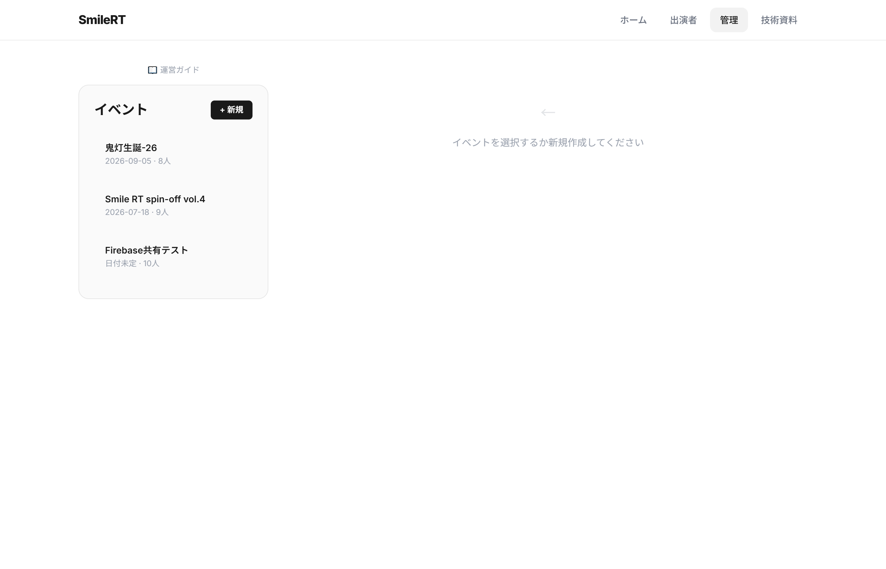
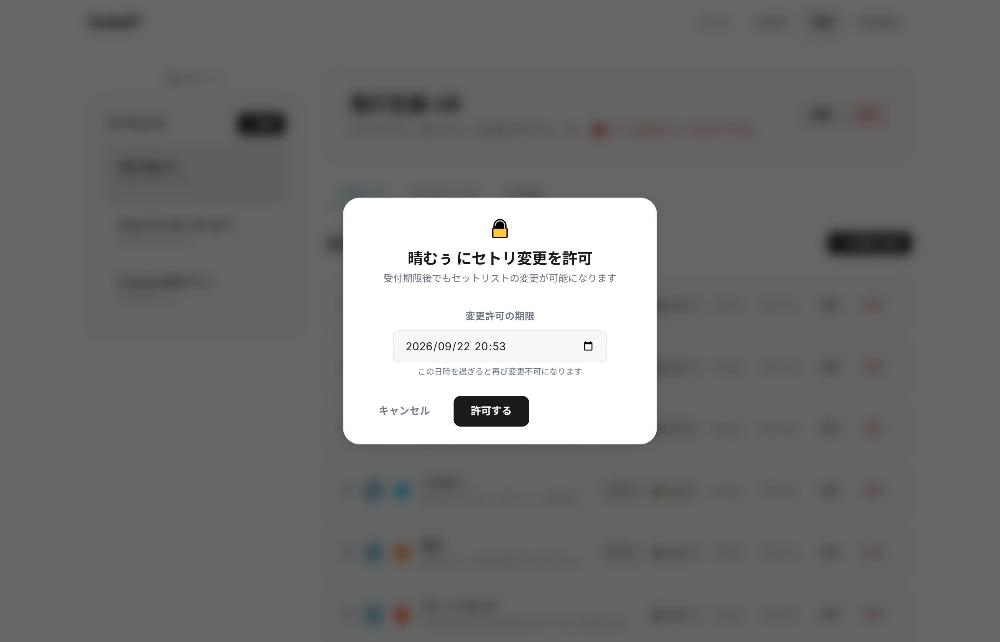
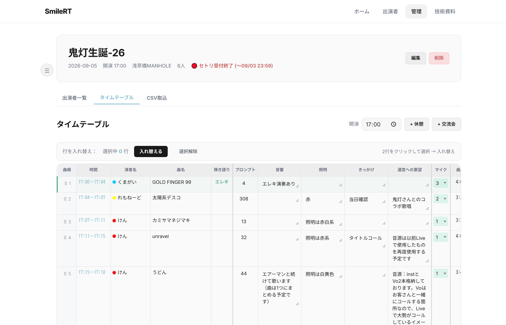

🛠️ 運営ガイド
管理画面の使い方と運営の流れを解説します
📋 イベント運営の流れ
管理画面では イベント作成 → 出演者管理 → タイムテーブル編集 → 技術資料出力 の流れで進めます。
1 ログイン ＆ イベント一覧
ナビゲーションの 「管理」 をタップするとPINコード入力画面が表示されます。
ログイン後、左側のサイドバーにイベント一覧が表示されます。

- 「+ 新規」ボタンでイベントを新規作成（イベント名・日付・会場・開演時間・スケジュール・メモを設定可能）
- イベント名をクリックすると詳細画面が開きます
- 各イベントの日付・出演者数が一覧で確認できます
イベント作成時に セトリ締切日時 を設定すると、期限を過ぎた出演者の入力を自動で締め切ります。
2 出演者の管理
イベントを選択すると、出演者一覧 タブが表示されます。
各出演者の曲名・サイリウムカラー・パーカーサイズなどが一覧で確認できます。

- 「+ 出演者を追加」で運営側から出演者を追加
- 「▼ 詳細」をクリックすると、プロフィール・全曲一覧・音源ステータス・技術リクエスト・写真投稿許可を展開表示
- 「フォーム」をクリックすると、その出演者の入力フォーム（input.html）が別タブで開きます
- 「編集」で出演者名やプロフィール・曲情報を直接修正可能
- 「削除」で出演者を削除（取り消し不可）
- 左の ⠿ ハンドル をドラッグして出演順を入れ替えられます
出演者の 「削除」は取り消せません。セットリストや演出リクエストも全て消えるため、慎重に操作してください。
🔓 個別セトリ変更許可
セトリ受付締切後でも、特定の出演者に対して 期限付きでセトリ変更を許可 できます。

- 出演者一覧の各カードにある 「🔓 変更許可」ボタン をクリック
- 許可期限（日時）を設定して保存
- 許可された出演者は期限内であればセトリの入力・修正が可能に
- 期限を過ぎると自動的に再び受付終了状態に戻ります
出演者側には「🔓 管理者によりセトリ変更が許可されています（期限表示）」の黄色バナーが表示されるため、許可されていることが一目でわかります。
3 タイムテーブルの編集
「タイムテーブル」タブに切り替えると、全出演者の曲が時系列で一覧表示されます。
曲順の入れ替え・休憩の挿入・演出情報の編集が可能です。

📊 タイムテーブルの主な列
| 列名 | 内容 |
|---|---|
| 曲順 | 通し番号（ドラッグハンドル付き） |
| 時間 | 開演時間と曲尺から自動計算された時刻 |
| 演者名 | 出演者名（サイリウムカラー付き） |
| 曲名 | 楽曲名 |
| 弾き語り | 弾き語り時は使用楽器を表示 |
| プロンプト | 曲の出だし・きっかけ（インライン編集可） |
| 音響 / 照明 / きっかけ | 各演出リクエスト（インラインで直接編集可） |
| 運営への要望 | その他の要望（インライン編集可） |
| マイク | マイク本数（0〜10本、プルダウン選択） |
| 曲尺 | 曲の長さ |
| 完成音源 | ステータス（空白 / 受け取り済み / 完成済み） |
| 音源確認 / はれむぅ確認 | チェックボックスで確認状況を管理 |
- 開演時間を設定すると、各曲の開始・終了時刻が自動計算されます
- 行左の ⠿ ハンドル をドラッグして曲順を入れ替え（スマホは長押しドラッグにも対応）
- 「+ 休憩」「+ 交流会」で特殊スロットを挿入
- 2行をクリックして選択し、「入れ替える」ボタンで曲順を一括スワップも可能
- 各セルを直接クリックして演出メモをインライン編集できます
タイムテーブルタブに切り替えると、サイドバーが自動的に折りたたまれて画面幅が最大化されます。☰ ボタンで開閉可能です。
📥 CSVからの一括取込
Googleフォームで事前に集めた情報を CSV形式 で一括取り込みできます。
- Googleフォーム → スプレッドシート → 「ファイル → ダウンロード → CSV」 で取得
- 「CSV取込」タブにCSVファイルをドラッグ＆ドロップ
- 取り込み後、出演者とセットリストが自動的に登録されます
CSV取込は 追加 操作です。既に登録済みの出演者とは重複する可能性があるため、取り込み前に確認してください。
📊 技術資料の活用
ナビの 「技術資料」 ページでは、タイムテーブル・スケジュール・出演者情報をまとめて確認・エクスポートできます。
- Sheetsにコピー / Excelにコピー — スプレッドシートに直接貼り付け可能
- CSV保存 — タイムテーブルをCSVファイルとしてダウンロード
- 印刷 — PA・照明スタッフ向けにプリントアウト
- リハ時間トグル — リハーサルの時刻を自動計算して表示
- 表示列フィルター — 必要な列だけを表示するカスタマイズ機能
技術資料ページは パスワード不要 で誰でもアクセスできます。PA・照明スタッフにURLを共有してください。
📢 出演者への案内
出演者にセットリストを入力してもらう際は、以下の情報を共有してください。
- SmileRTのURL を共有（ホームページのリンク）
- 出演者は 「出演者」ページ からイベント選択 → 名前選択 → 入力の流れで完結
- 詳しい操作手順は 📖 出演者ガイド にまとめてあります
- 出演者ガイドのURLを直接共有するのも効果的です
セトリ締切を設定している場合は、締切日時も合わせて出演者に伝えてください。期限を過ぎると入力・修正ができなくなります（個別許可で例外対応可能）。
💡 運営のコツ
イベント編集のポイント
→ イベントヘッダーの「編集」ボタンから、イベント名・日付・会場・開演時間・スケジュール（会場入り・リハ開始/終了・顔合わせ・オープン・交流会開始/終了・完全撤収）を一括設定できます。
→ イベントヘッダーの「編集」ボタンから、イベント名・日付・会場・開演時間・スケジュール（会場入り・リハ開始/終了・顔合わせ・オープン・交流会開始/終了・完全撤収）を一括設定できます。
出演者の並び順
→ 出演者一覧の左にある ⠿ ハンドルをドラッグすると出演順を変更できます（スマホは長押しドラッグ対応）。タイムテーブルの曲順にも反映されます。
→ 出演者一覧の左にある ⠿ ハンドルをドラッグすると出演順を変更できます（スマホは長押しドラッグ対応）。タイムテーブルの曲順にも反映されます。
Discord通知
→ セットリストが更新されるとDiscordに自動通知が届きます（設定済みの場合）。変更内容を即座に把握できます。
→ セットリストが更新されるとDiscordに自動通知が届きます（設定済みの場合）。変更内容を即座に把握できます。
データのバックアップ
→ 技術資料ページの「CSV保存」で定期的にデータをエクスポートしておくと安心です。
→ 技術資料ページの「CSV保存」で定期的にデータをエクスポートしておくと安心です。
SmileRT LIVE Manager — 運営ガイド